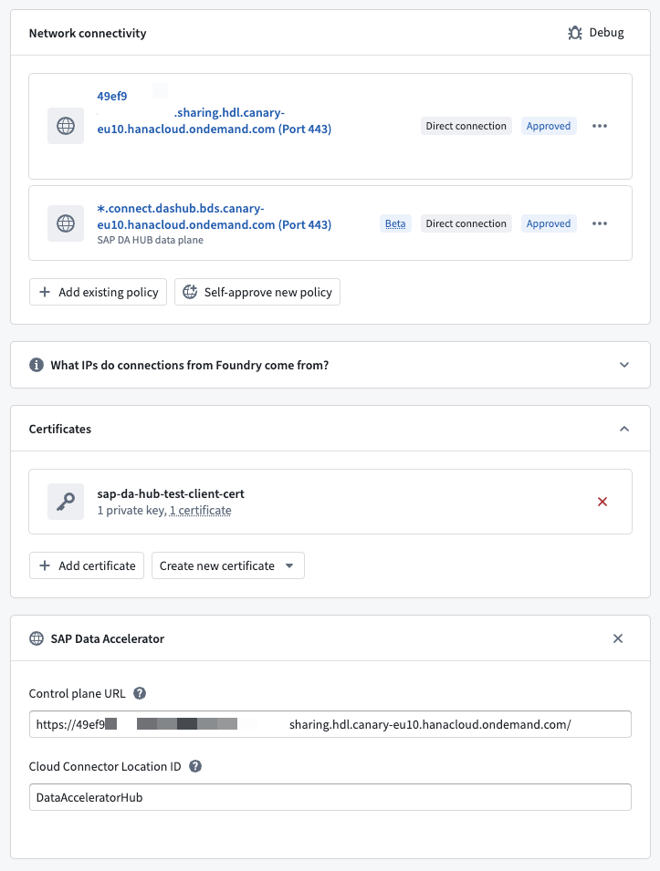

SAP Data Accelerator â is an SAP-managed connectivity service that routes Foundry's traffic to an on-premise SAP system through your SAP Cloud Connector. Instead of dialing the SAP host directly, Foundry tunnels its traffic through SAP Data Accelerator, which relays it to your SAP Cloud Connector â and on to the backend SAP system.
To use SAP Data Accelerator, complete the one-time SAP setup below, then point an existing SAP ERP or SAP SLT source at it. Routing a source through SAP Data Accelerator does not change the data you sync, how you authenticate to the SAP add-on, or your sync configuration; only the network path to the SAP system changes.
SAP Data Accelerator is supported only on sources that use a Foundry worker. If your source uses an agent worker, migrate it to a Foundry worker first.
A Palantir-issued client certificate is required to use SAP Data Accelerator. Request it from your Palantir representative.
Provisioning and configuring SAP Data Accelerator happens entirely in SAP's tooling and is owned by your SAP administrator. Follow SAP's Data Accelerator documentation â (see also SAP's step-by-step provisioning guide â) to do the following:
After completing the SAP setup, make sure you have the following values to configure the Foundry source:
https://<tenant>.sharing.hdl.<region>.hanacloud.ondemand.com)Configure the following on your SAP ERP or SAP SLT source, in addition to the source's normal settings.
Create a Control Panel client certificate from the Palantir-issued client certificate (the same one you registered as a partner system in SAP Data Accelerator), then attach it to the source.
You can copy the client certificate directly from Foundry by hovering over it. Two certificates are copied to your clipboard; the first is the one you provide on the SAP side when configuring SAP Data Accelerator.
Depending on your SAP Data Accelerator configuration, you may also need to add server certificates so the Foundry worker can trust the TLS connection to SAP Data Accelerator. If the SAP Data Accelerator endpoints present certificates that are not signed by a publicly trusted certificate authority, add the relevant server certificates to the source.
Set the source's host and port to the virtual host and virtual port defined in your SAP Cloud Connector.
Add the optional SAP Data Accelerator property to the source and provide the following:
| Field | Required | Description |
|---|---|---|
| Control plane URL | Yes | The SAP Data Accelerator control plane URL you collected during SAP-side setup (for example, https://<tenant>.sharing.hdl.<region>.hanacloud.ondemand.com). |
| Cloud Connector Location ID | No | The Location ID of the Cloud Connector that fronts your SAP system. Required only when more than one Cloud Connector is registered against the same SAP Data Accelerator tenant; otherwise leave it empty. |
Allow outbound HTTPS (port 443) from the Foundry worker to both of the following:
<tenant>.sharing.hdl.<region>.hanacloud.ondemand.com).https://*.connect.dashub.bds.<region>.hanacloud.ondemand.com.See the egress policies documentation for how to configure network access.
After completing these steps, your configured source should resemble the following:
